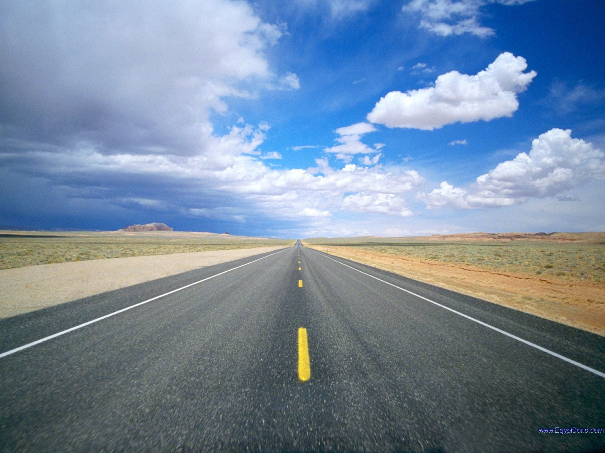
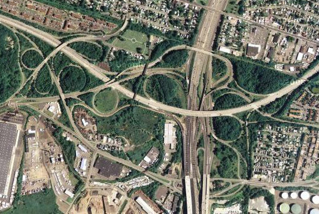

Internet - how does it work?
Internet - how does it work?
Alexander Rozumii
github.com/brain-geek
@brain-geek
Expecting this?

It's more like this!

Let's start from the ground up
Bits and bytes
Binary
Oct
Dec
Hex
Symbol
110 1000
150
104
68
h
110 0101
145
101
65
e
110 1100
154
108
6C
l
110 1100
154
108
6C
l
110 1111
157
111
6F
o
010 0001
041
33
21
!
Sources
Road illustrations:
1
,
2
Thank you!
Questions?